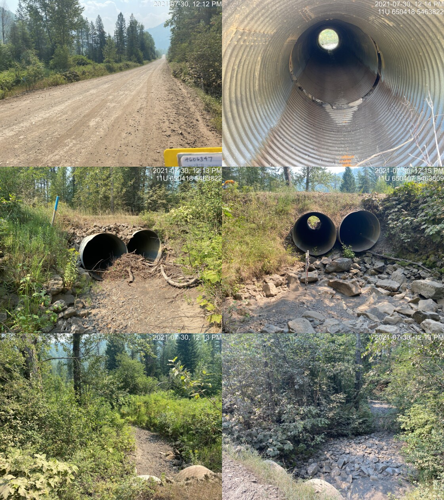

Appendix - 197793 - Bean Creek
Site Location
PSCIS crossing 197793 is located on a Bean Creek 26km south Fernie on Lodgepole FSR. The crossing is located approximately 100m up from the junction of the Lodgepole FSR and the Wigwam FSR. The culverts are located approximately 2.3km upstream from the confluence with Lodgepole Creek. Lodgepole FSR (forest file ID 5466) is the responsibility of Ministry of Forests, Lands, Natural Resource Operations and Rural Development - Rocky Mountain Forest District.
Background
At crossing 197793, Bean Creek is a fourth order stream with a watershed area upstream of the crossing of approximately 9.4km2. The elevation of the south-west facing watershed ranges from a maximum of 2198m to 1146m near the crossing (Table 5.20). Upstream of Lodgepole FSR, no fish have previously been recorded (MoE 2020b). A Fortis gas pipeline compression station is located approximately 600m north of the crossing adjacent to the Lodgepole FSR.
fpr_tab_wshd_sum(site_id = my_site) %>%
my_kable(caption_text = paste0('Summary of derived upstream watershed statistics for PSCIS crossing ', my_site, '.'),
footnote_text = 'Elev P60 = Elevation at which 60% of the watershed area is above')| Site | Area Km | Elev Site | Elev Min | Elev Max | Elev Mean | Elev Median | Elev P60 |
|---|---|---|---|---|---|---|---|
| 197793 | 9.4 | 1147 | 1146 | 2198 | 1563 | 1488 | 1427 |
| * Elev P60 = Elevation at which 60% of the watershed area is above |
PSCIS crossing 197793 was earmarked for assessment by Canadian Wildlife Federation due to bsfishpass modelling which indicated potentially large quantities of habitat suitable for westslope cutthrout trout spawning and rearing upstream. Table 5.21 presents preliminary fish passage modelling data for crossing 197793 with linear length of spawning and rearing habitat estimated for westslope cutthrout trout at 1.7km and 1.8km respectively. A map of the watershed is provided in map attachment 082G.108.
print_tab_summary_bcfp()| Habitat | Potential | Remediation Gain | Remediation Gain (%) |
|---|---|---|---|
| WCT Spawning (km) | 1.7 | 1.7 | 100 |
| WCT Rearing (km) | 1.8 | 1.8 | 100 |
| WCT Stream (km) | 7.6 | 5.0 | 66 |
| WCT Network (km) | 7.6 | 5.0 | 66 |
| WCT Lake Reservoir (ha) | 0.0 | 0.0 | – |
| WCT Wetland (ha) | 0.0 | 0.0 | – |
| WCT Slopeclass03 Waterbodies (km) | 0.0 | 0.0 | – |
| WCT Slopeclass03 (km) | 0.3 | 0.3 | 100 |
| WCT Slopeclass05 (km) | 1.5 | 1.5 | 100 |
| WCT Slopeclass08 (km) | 0.6 | 0.6 | 100 |
| WCT Slopeclass15 (km) | 3.0 | 1.5 | 50 |
| WCT Slopeclass22 (km) | 2.2 | 1.2 | 55 |
| * Model data is preliminary and subject to adjustments. | |||
| † Modelled rearing habitat estimates do not currently include linear lengths of centrelines within lakes and wetlands. |
Stream Characteristics at Crossing
At the time of the survey, the two culverts under Lodgepole FSR were un-embedded, non-backwatered and ranked as a barrier to upstream fish passage according to the provincial protocol (MoE 2011b). The pipes were 1.5m in diameter with lengths of 14m, a culvert slope of 2.5%, a stream width ratio of 3.5 and an outlet drop of 0m (Table 5.22). Significant damage to the crossing was apparent with the pipe split vertically through the entire culvert near the centre of the southern most pipe (Figure 5.25). The stream was completely dry at the time of the survey and the freshwater atlas stream layer indicates intermittent flow (FLNRORD 2021). Of note, the culverts are located approximately 840m upstream from the confluence with a tributary to Bean Creek and a bridge of stream of the confluence (PSCIS 197792) was assessed on this tributary. The tributary was flowing at the bridge site at the time of the survey (2021-07-30).
##this is useful to get some comments for the report
hab_site %>% filter(site == my_site & location == 'us') %>% pull(comments)
my_priority <- my_priority_info()Stream Characteristics Downstream
The stream was surveyed downstream from the culvert for 340m (Figure 5.26). Total cover amount was rated as moderate with overhanging vegetation dominant. Cover was also present as small woody debris and undercut banks (Table 5.23). The average channel width was 4.4m and the average gradient was 3.3%. The dominant substrate was cobbles with gravels subdominant. Although, dry at the time of the survey, there were pockets of gravels suitable for resident salmonids and there was evidence of high flows, significant erosion and a deeply incised channel and eroding banks. The habitat was rated as low value for resident salmonid rearing due to a lack of water.
Stream Characteristics Upstream
The stream was surveyed immediately upstream from 197793 for approximately 900m to a bridge (PSCIS 197794) on the Fortis gas pipline (Figures 5.27 - 5.28). Within the area surveyed, total cover amount was rated as moderate with deep pools dominant. Cover was also present as small woody debris, large woody debris, boulders, and overhanging vegetation (Table 5.23). The average channel width was 5.3m and the average gradient was 2.7%. The dominant substrate was cobbles with gravels subdominant. Extensive areas of gravels suitable for spawning resident salmonids were present and there was evidence of high flows, significant erosion and a deeply incised channel and eroding banks. Habitat value was rated as low for salmonid rearing and spawning due to the complete lack of water.
Structure Remediation and Cost Estimate
Should restoration/maintenance activities proceed at the site, replacement of PSCIS crossing 197793 with a bridge (12m span) is recommended. The cost of the work is estimated at $240,000 for a cost benefit of 7.5 linear m/$1000 and 39.8m2/$1000.
Conclusion
A conservative estimate of mainstem habitat upstream of crossing 197793 is 1.8km. Habitat in the areas surveyed upstream of the culvert were rated as low value for salmonid rearing and spawning due to likely annual seasonal dewatering within the rocky south-west facing watershed. Lodgepole FSR is the responsibility of the Ministry of Forests, Lands, Natural Resource Operations and Rural Development - Rocky Mountain Forest District. Crossing 197793 was ranked as a low priority for proceeding to design for replacement.
print_tab_summary()| Location and Stream Data |
|
Crossing Characteristics | – |
|---|---|---|---|
| Date | 2021-07-30 | Crossing Sub Type | Round Culvert |
| PSCIS ID | 197793 | Diameter (m) | 1.5 |
| External ID | – | Length (m) | 14 |
| Crew | AI TS | Embedded | No |
| UTM Zone | 11 | Depth Embedded (m) | – |
| Easting | 650414.6 | Resemble Channel | No |
| Northing | 5463819 | Backwatered | No |
| Stream | Bean Creek | Percent Backwatered | – |
| Road | Lodgepole FSR | Fill Depth (m) | 1 |
| Road Tenure | FLNR DRM 5466 | Outlet Drop (m) | 0 |
| Channel Width (m) | 5.3 | Outlet Pool Depth (m) | 0.2 |
| Stream Slope (%) | 2.7 | Inlet Drop | No |
| Beaver Activity | No | Slope (%) | 2.5 |
| Habitat Value | Low | Valley Fill | Deep Fill |
| Final score | 21 | Barrier Result | Barrier |
| Fix type | Replace with New Open Bottom Structure | Fix Span / Diameter | 12 |
| Photos: From top left clockwise: Road/Site Card, Barrel, Outlet, Downstream, Upstream, Inlet. | |||
| Comments: Large channel but stream is completely dry. 12:11 |
tab_hab_summary %>%
filter(Site == my_site) %>%
# select(-Site) %>%
my_kable(caption_text = paste0('Summary of habitat details for PSCIS crossing ', my_site, '.')) | Site | Location | Length Surveyed (m) | Channel Width (m) | Wetted Width (m) | Pool Depth (m) | Gradient (%) | Total Cover | Habitat Value |
|---|---|---|---|---|---|---|---|---|
| 197793 | Upstream | 900 | 5.3 | – | 0.7 | 2.7 | moderate | low |
| 197793 | Downstream | 340 | 4.4 | – | 0.4 | 3.3 | moderate | low |
my_photo1 = pull_photo_by_str(str_to_pull = '_barrel')
my_caption1 = paste0('Damage within PSCIS crossing ', my_site, '.')grid::grid.raster(get_img(photo = my_photo1))Figure 5.25: Damage within PSCIS crossing 197793.
my_photo2 = pull_photo_by_str(str_to_pull = '_downstream')
my_caption2 = paste0('Habitat downstream of crossing ', my_site, '.')grid::grid.raster(get_img(photo = my_photo2))Figure 5.26: Habitat downstream of crossing 197793.
my_caption <- paste0('Left: ', my_caption1, ' Right: ', my_caption2)
knitr::include_graphics(get_img_path(photo = my_photo1))
knitr::include_graphics("fig/pixel.png")
knitr::include_graphics(get_img_path(photo = my_photo2))my_photo1 = pull_photo_by_str(str_to_pull = '_u1_')
my_caption1 = paste0('Habitat upstream of PSCIS crossing ', my_site, '.')grid::grid.raster(get_img(photo = my_photo1))Figure 5.27: Habitat upstream of PSCIS crossing 197793.
my_photo2 = pull_photo_by_str(str_to_pull = '_u2_')
my_caption2 = paste0('Habitat upstream of PSCIS crossing ', my_site, '.')grid::grid.raster(get_img(photo = my_photo2))Figure 5.28: Habitat upstream of PSCIS crossing 197793.
my_caption <- paste0('Left: ', my_caption1, ' Right: ', my_caption2)
knitr::include_graphics(get_img_path(photo = my_photo1))
knitr::include_graphics("fig/pixel.png")
knitr::include_graphics(get_img_path(photo = my_photo2))knitr::opts_chunk$set(echo=FALSE, message=FALSE, warning=FALSE)
source('R/packages.R')
source('R/functions.R')
source('R/tables.R')my_site <- 197796